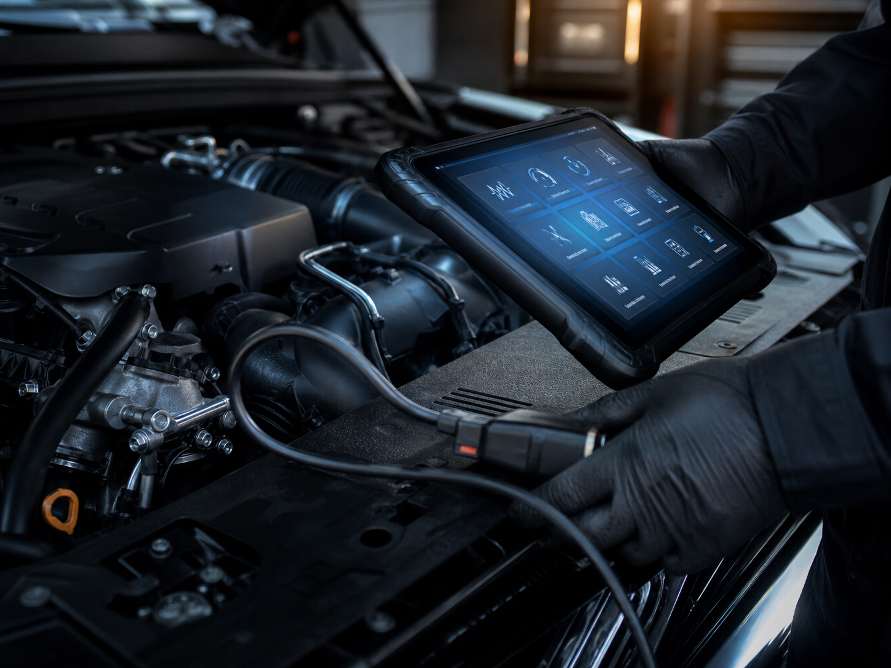
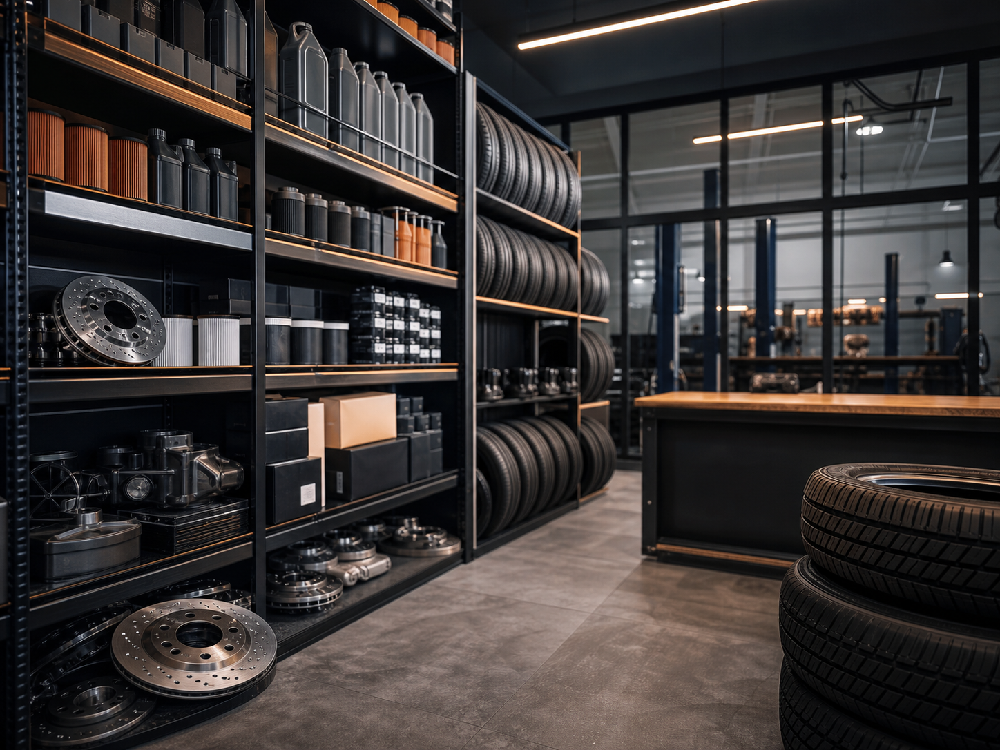
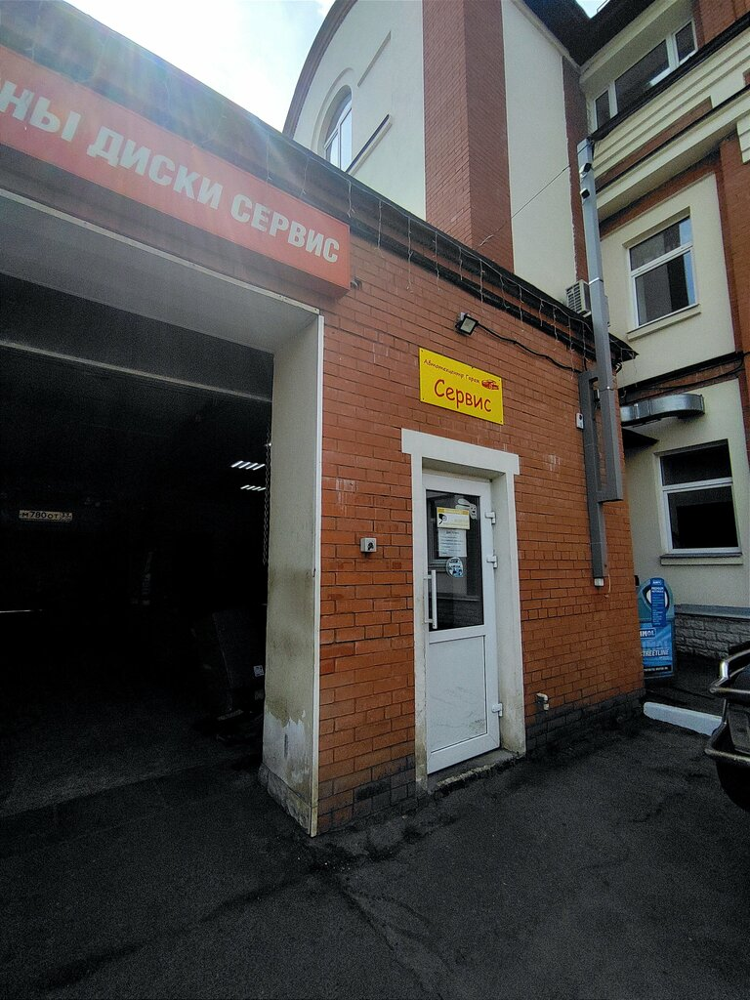
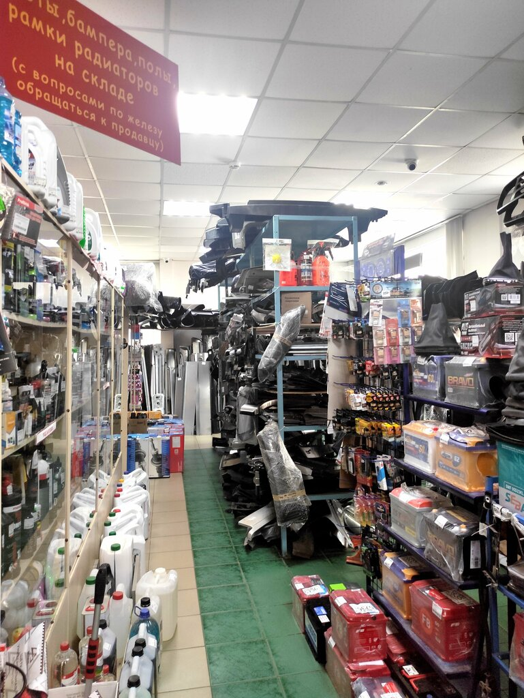
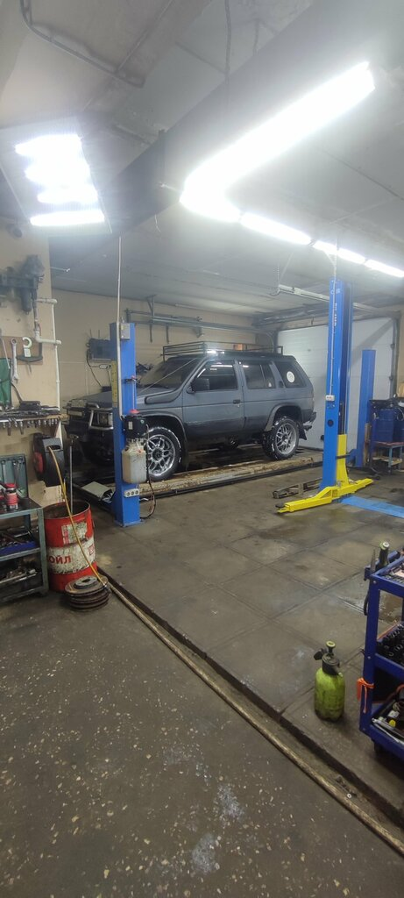
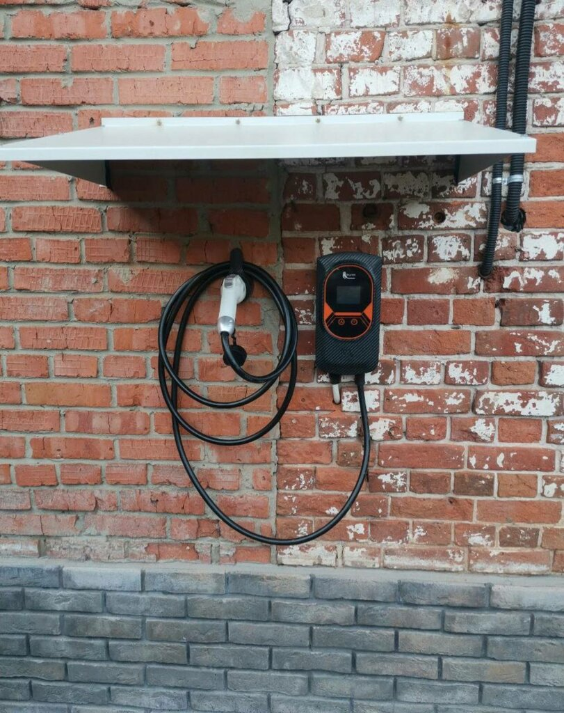
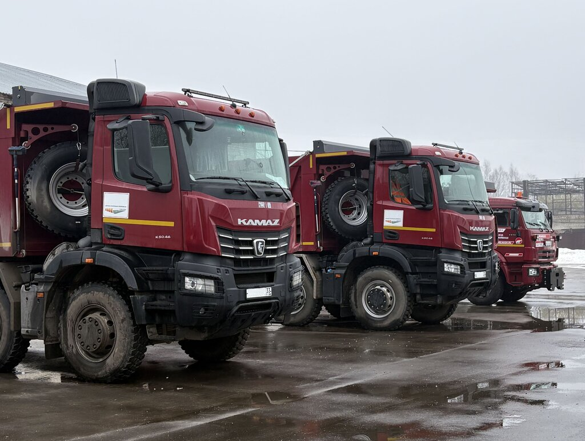
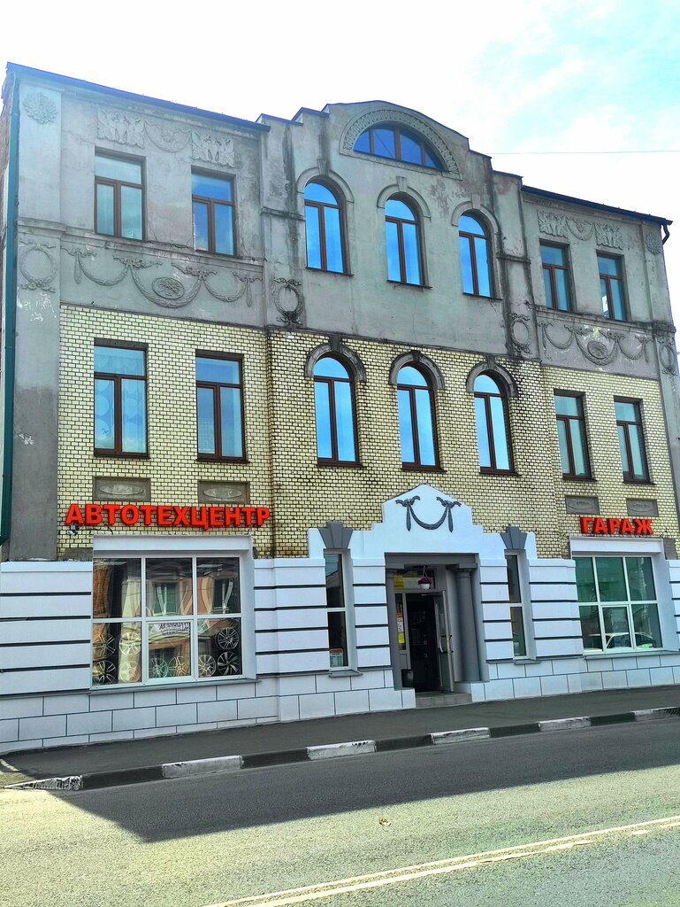

Симптомы
Стук спереди, вибрация на скорости, ошибка на панели или шум при торможении сразу сужают круг проверки.
Диагностика, ходовая, ТО, шиномонтаж и запчасти в одном месте.
Для диагностики в «Гараже» важны не общие слова «что-то стучит», а конкретные признаки: где слышно, когда появляется и на каком автомобиле.
Стук спереди, вибрация на скорости, ошибка на панели или шум при торможении сразу сужают круг проверки.
Для Lada, импортного авто, грузовой машины или спецтехники отличаются узлы, расходники и подход к ремонту.
На холодную, при разгоне, торможении или после ямы — эти детали помогают понять, нужна диагностика, ходовая, ТО или подбор запчасти.
Направления собраны вокруг типичных задач автовладельца: понять причину неисправности, обслужить машину, решить вопрос с колёсами или запчастями.
Проверка ошибок, шумов, вибраций и непонятного поведения перед ремонтом.
Работы с колёсами и сезонная замена, которую клиенты отдельно упоминают в отзывах.
Замена масла и фильтров; рядом есть магазин автозапчастей для расходников.
Проверка стуков, люфта, неровного хода и последствий плохой дороги.
Подбор деталей при автотехцентре, чтобы не искать запчасть отдельно по городу.
Для случаев, когда симптом есть, но непонятно, нужна диагностика, ходовая, ТО или другая работа.

Марка авто, услуга, симптомы и удобное время визита.
Отделяет диагностику, запчасти, ходовую, ТО или шиномонтаж по описанию проблемы.
Адрес сервиса и магазина запчастей: Вязники, Советская улица, 80.
После осмотра отдельно обсуждаются список работ, сроки и запчасти.
Форма собирает то, что обычно приходится долго объяснять по телефону: марку машины, услугу, симптомы, желаемое время и способ связи.

Для сомневающегося автовладельца важны не общие оценки, а детали: помогли с подвеской в дороге, сделали шиномонтаж, заменили масло и нашли запчасти.
В дороге возникла проблема с подвеской. Сервис принял на ремонт, помог с запчастью и позволил продолжить поездку.
Большой выбор запчастей, приветливый персонал, широкий набор услуг от шиномонтажа до диагностики и удобное расположение.
Заезжал на шиномонтаж и замену масла с фильтром. Понравилось, что можно купить запчасти и обслужить авто в одном месте.
По фотографиям проще понять, куда приезжать, как выглядит территория и рабочее пространство автотехцентра.






Без осмотра нельзя назвать точную сумму: модель, узел и запчасти меняют стоимость. До ремонта важно зафиксировать, что входит в работу и какие детали нужны.
Ориентир возможен по описанию симптомов и модели авто, но точная сумма зависит от осмотра, узла и запчастей.
Да, потому что диагностика, ремонт ходовой, ТО и шиномонтаж требуют разного времени и подготовки.
Сервис работает с легковыми, импортными, отечественными, грузовыми автомобилями и спецтехникой.
Да, особенно если есть стук, вибрация, ошибка на панели, проблема после ямы или вопрос по запчасти.
Условия зависят от конкретной услуги: диагностики, ходовой, ТО, шиномонтажа, запчастей или общего ремонта.
Адрес: Владимирская область, Вязники, Советская улица, 80
Телефон: +7 (920) 925-50-25
График: пн-пт 08:00-18:00; сб 09:00-17:00; вс 09:00-16:00
Координаты: 56.244975, 42.160470
Открыть в Яндекс КартахУкажите услугу, марку авто, что именно происходит и когда удобно приехать на Советскую, 80.